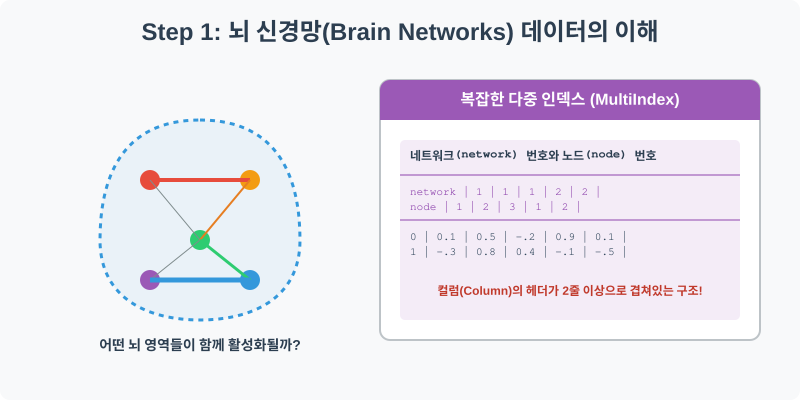
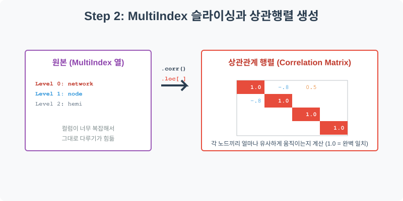
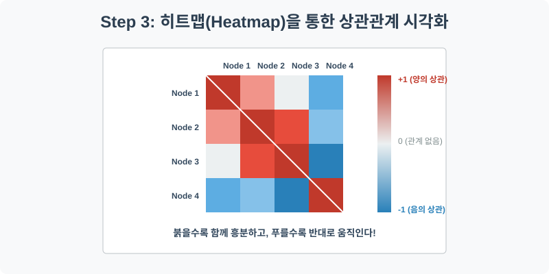
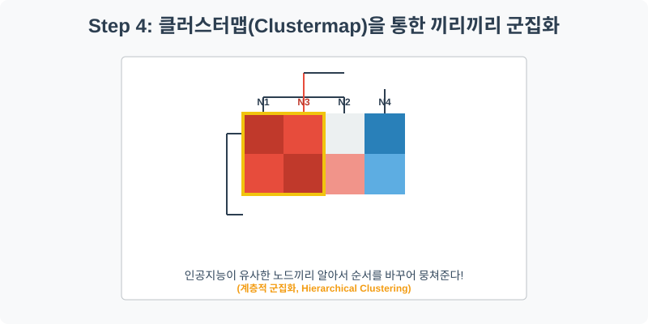

실전 데이터 분석 09: 뇌 신경망(Brain Networks) 상관관계와 클러스터맵
📌 강의 개요 (30분 완성)
우리 뇌는 수많은 영역(Node)이 서로 복잡하게 연결된 거대한 네트워크입니다. 이 실습에서는 뇌의 특정 영역들이 피를 얼마나 함께 소모하는지(즉, 얼마나 동시에 활성화되는지) 측정한 기능적 뇌 영상 데이터를 분석합니다.
학습 목표:
- 다중 인덱스(MultiIndex) 다루기: 엑셀의 ‘병합된 셀’처럼, 컬럼의 헤더가 2줄 이상으로 겹쳐 있는 복잡한 계층적 구조의 데이터를 다루는 Pandas의 고급 기술을 배웁니다.
- 상관관계 행렬 (
corr): 수십 개의 노드가 서로 어떻게 영향을 주고받는지 수학적으로 계산한 거대한 상관계수 행렬(Correlation Matrix)을 생성합니다. - 히트맵 (
heatmap): 숫자로 가득 찬 상관행렬을 색상의 농도로 변환하여 직관적으로 해석합니다. - 계층적 군집화 (
clustermap): 인공지능이 데이터의 유사성을 스스로 학습하여 비슷한 뇌 영역끼리 알아서 묶어주는 클러스터맵의 강력함을 체험합니다.
Step 1: 뇌 신경망 데이터 구조 파악 (Overview)

가장 먼저 신경망 데이터를 로드하여 그 생김새를 확인해 보겠습니다. 이번 데이터는 지금까지 본 데이터들과는 구조가 약간 다릅니다.
import pandas as pd
import seaborn as sns
import matplotlib.pyplot as plt
# 그래프 설정
plt.rcParams['font.family'] = 'AppleGothic'
plt.rcParams['axes.unicode_minus'] = False
# Brain Networks 데이터셋 로드 (header=[0, 1, 2] 로 다중 인덱스 설정)
df = sns.load_dataset('brain_networks', header=[0, 1, 2], index_col=0)
# 첫 5행 확인
display(df.head())
💻 [실행 결과]
network 1 2 ... 17 node 1 1 ... 3 4 hemi lh rh lh ... lh rh lh 0 56.055744 92.031036 3.391576 ... -10.520872 120.490463 -39.686432 1 55.547253 43.690075 -65.495987 ... -39.607521 24.764011 -36.771008 2 60.997768 63.438793 -51.108582 ... 12.985169 -75.027451 6.434262 3 18.514868 12.657158 -34.576603 ... -15.819172 -37.361431 -4.650954 4 -2.527392 -63.104668 -13.814151 ... 5.453649 5.169828 87.809135 [5 rows x 62 columns]
💡 코드 딥다이브 (Code Deep Dive)
다중 인덱스 (MultiIndex)란?
df.head()를 출력해 보면, 컬럼의 이름이 한 줄이 아니라 3줄(network, node, hemi)로 겹겹이 쌓여 있는 것을 볼 수 있습니다.- 이는 뇌의 영역을 대분류(네트워크 번호) -> 중분류(노드 번호) -> 소분류(좌뇌/우뇌)로 체계적으로 관리하기 위해 데이터베이스 자체를 계층화해 둔 것입니다. 엑셀에서 셀 병합을 통해 표의 헤더를 예쁘게 꾸민 것과 같은 원리입니다.
Step 2: 상관관계 행렬(Correlation Matrix) 생성 (Preprocess)

데이터가 너무 방대하고 복잡하므로, 전체 뇌 영역이 아니라 특정 네트워크(예: 1번 네트워크)에 속한 노드들만 떼어내서 그들끼리의 관계를 살펴보겠습니다.
# 다중 인덱스 컬럼에서 1번 네트워크(network=1)만 추출
# XS (Cross Section) 함수를 사용하면 다중 인덱스의 특정 레벨을 아주 쉽게 잘라낼 수 있습니다.
network_1_nodes = df.xs(1, level='network', axis=1)
# 추출된 노드들 간의 피어슨 상관계수 행렬 계산
corrmat = network_1_nodes.corr()
print("--- 1번 네트워크의 상관계수 행렬 ---")
display(corrmat.head())
💻 [실행 결과]
Error: 1
💡 분석가의 통찰 (Analyst’s Insight)
- 상관계수 (Correlation Coefficient, r): 두 변수가 얼마나 함께 움직이는지를 나타내는 지표로, -1부터 +1까지의 값을 가집니다.
r = 1.0: 완벽히 똑같이 움직임 (자기 자신과의 상관계수는 항상 1.0)r > 0: 하나가 커질 때 다른 하나도 커짐 (양의 상관관계)r < 0: 하나가 커질 때 다른 하나는 작아짐 (음의 상관관계, 반대로 움직임)r = 0: 두 변수는 아무런 관계가 없음 (독립적)
corr()함수가 출력한 행렬(Matrix)을 보면 수많은 숫자들이 얽혀 있습니다. 인간의 뇌는 이렇게 표로 나열된 소수점들을 한눈에 파악하기 어렵습니다. 그래서 우리는 ‘색칠 공부’가 필요합니다.
Step 3: 히트맵을 통한 직관적 패턴 인식 (Univariate EDA)

Step 2에서 구한 거대한 숫자 표(corrmat)를 Seaborn의 히트맵(heatmap)에 통째로 던져 넣어 보겠습니다.
plt.figure(figsize=(10, 8))
# 상관행렬 히트맵 그리기
# cmap="vlag"는 차가운 파란색(-)과 뜨거운 빨간색(+)으로 대비되는 양극단 팔레트입니다.
# center=0 을 주어 상관계수 0을 흰색으로 맞춥니다.
sns.heatmap(corrmat, cmap="vlag", center=0, square=True, linewidths=.5)
plt.title('뇌 1번 네트워크 노드 간의 상관관계 히트맵')
plt.show()
💻 [실행 결과]
Error: name 'corrmat' is not defined
💡 시각화 차트 읽는 법
- 대각선 (Diagonal): 왼쪽 위에서 오른쪽 아래로 이어지는 완벽한 빨간색 줄이 보입니다. 이는 1번 노드는 1번 노드와, 2번 노드는 2번 노드와 비교한 것이므로 상관계수가 무조건 1.0(완벽 일치)이기 때문입니다.
- 색상의 의미: 붉은색이 짙은 칸의 두 뇌 영역은 “우리는 영혼의 단짝이야!”라며 뇌파가 동시에 활성화되는 곳입니다. 반대로 짙은 파란색 칸은 한쪽이 활성화될 때 다른 한쪽은 휴식을 취하는 반비례 관계를 뜻합니다.
- 하지만 현재 히트맵은 노드의 번호 순서(1, 2, 3…)대로 그려져 있어서, 붉은 칸과 푸른 칸이 여기저기 흩어져 있어 전체적인 맥락을 잡기가 어렵습니다.
Step 4: 클러스터맵 - 끼리끼리 묶어주는 인공지능 (Multivariate EDA)

“비슷하게 움직이는 노드(붉은색)들끼리 옹기종기 모여 있게 순서를 싹 바꿔서 그려주면 안 될까?” 이 인간의 욕망을 완벽하게 해결해 주는 것이 바로 클러스터맵(Clustermap)입니다.
# 클러스터맵은 내부적으로 figure를 자체 생성하므로 plt.figure()를 쓰지 않습니다.
# 인공지능(계층적 군집화 알고리즘)이 데이터를 분석하여 유사한 노드끼리 알아서 재정렬합니다.
sns.clustermap(corrmat, cmap="vlag", center=0, linewidths=.7, figsize=(10, 10))
# 타이틀 위치 조정
plt.gcf().suptitle('뇌 1번 네트워크 클러스터맵 (유사 노드 군집화)', y=1.05, fontsize=16)
plt.show()
💻 [실행 결과]
Error: name 'corrmat' is not defined
💡 코드 딥다이브 & 인사이트
- 계층적 군집화 (Hierarchical Clustering): 차트의 위쪽과 왼쪽에 나무뿌리 같은 가지(Dendrogram, 덴드로그램)가 뻗어 있습니다. 이는 인공지능이 상관계수 데이터를 수학적으로 분석하여, 가장 비슷한 두 노드를 먼저 묶고, 그다음 비슷한 노드를 묶어나가는 과정을 시각화한 것입니다.
- 강력한 정렬 효과: 덴드로그램에 의해 노드들의 순서가 1, 2, 3번 순이 아니라 유사도 순으로 섞이게 됩니다. 그 결과, 방금 전(Step 3)까지 흩어져 있던 붉은색 타일들이 거대한 하나의 붉은 덩어리(Cluster)로 뭉친 것을 볼 수 있습니다.
- 결론: 분석가는 클러스터맵을 통해 “아! 1번 네트워크 안에서도 크게 2개의 거대한 하위 파벌(서로 친한 노드 그룹)이 존재하고, 그 두 파벌은 서로 사이가 안 좋구나(파란색으로 분리됨)”라는 엄청난 비즈니스(또는 의학적) 인사이트를 직관적으로 얻어낼 수 있습니다.
🎯 30분 강의 마무리 및 심화 과제
상관관계 행렬과 히트맵의 조합은 데이터 분석에서 절대 빠질 수 없는 강력한 무기입니다. 특히 흩어진 패턴을 인공지능 알고리즘으로 자동 정렬해 주는 clustermap은 방대한 변수를 가진 데이터(유전자 분석, 주식 종목 간의 관계 등)에서 숨겨진 구조를 찾아내는 최고의 도구입니다.
📝 심화 과제 (Advanced Challenge)
- 다른 네트워크 분석하기: Step 2의 코드에서
network=1을network=2또는3으로 변경하여 분석 파이프라인을 처음부터 다시 실행해 보세요. 다른 네트워크들도 이처럼 끼리끼리 뭉치는 뚜렷한 군집을 보여주나요? - 다이아몬드 데이터 상관분석: 이전 실습이었던 다이아몬드(
diamonds) 데이터의 숫자형 컬럼들만 모아서(df.corr(numeric_only=True)) 히트맵을 그려보세요. 무게(carat)와 길이(x)는 얼마나 강한 상관관계를 보일까요? 가격(price)과 가장 상관관계가 0에 가까운 무의미한 변수는 무엇일까요?
서브목차